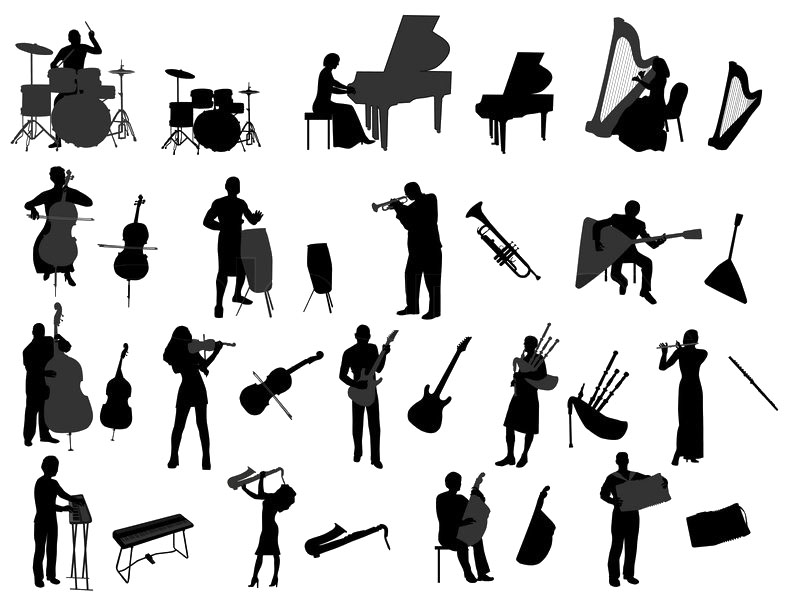
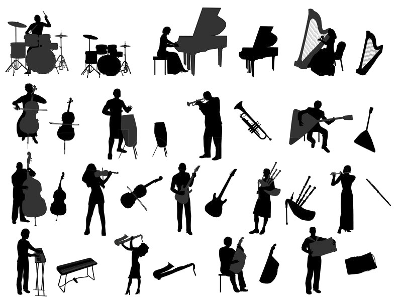

Hobby Website
One of the first projects I did in PLTW CSE was a hobby website. My partner and I created an online Musical Instrument Encyclopedia. You can access it by clicking here.
Edward Elgar: Enigma Variations, Op. 36
One of the first projects I did in PLTW CSE was a hobby website. My partner and I created an online Musical Instrument Encyclopedia. You can access it by clicking here.
Edward Elgar: Enigma Variations, Op. 36
